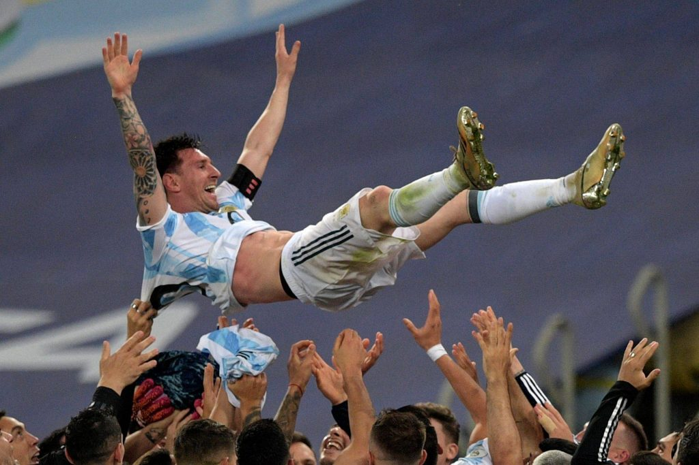

My name is Rey Ortiz Bautista. I am from Charleston, SC, and currently live in Knott Hall on campus. I have 3 siblings (2 brothers and a sister), and parents who are the best. I am majoring in Science-Business and minoring in Data Science. I do not yet know what I wish to be in the future but I hope it is something I enjoy doing. I love playing soccer, going camping, fishing, and being active. At ND, I am part of the Futsal Club where we play soccer 2-3 times a week. Furthermore, this semester I am engaged in research for Dr. Gursky where we are looking at the impact that solid stress has on breast cancer cells. Ultimately, I am excited for this semester and thank you for reading my intro.
Biography of Lionel Messi, my favorite and the greatest soccer player ever
| Top Two Players in During the World Cup | Lionel Messi(35 yo.) | Kylian Mbappe (23 yo.) |
|---|---|---|
| Number of Goals | 7 goals | 8 goals(golden boot winner) |
| Lost or won? | World Cup Champions | Runner-up |